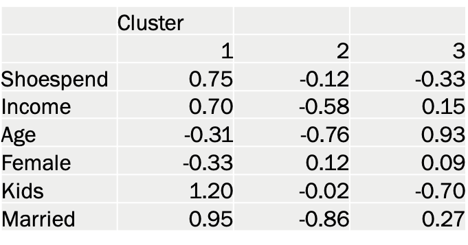

Analysis of the Shoe Market
Summary
For IMC 302: Research for Marketing Communications, I analyzed a dataset about the Shoe Market through SPSS and pulled relevant insights for a hypothetical report to stakeholders. Skills I used include data visualization, indexing, regression, factor analysis, and k-means cluster analysis. I presented my analysis throughout the quarter through 4 separate presentations and included highlights here.Legend for variables:
- married: married or not
- size: size of household in count of household members
- kids: whether or not children are present in household
- female: female or not
- age: how old respondent is
- income: yearly income
- married: married or not
- own: whether or not respondent owns their home
I was interested in taking a closer look, so I started by segmenting by age group.
- Walmart and especially Kohl’s and DSW are generally more popular with older age groups.
- Nike is the opposite, being more popular with younger generations.
- Amazon is relatively uniform- most age groups aside from ages 18-24 are similar in their preference for shoe shopping at Amazon.
- Continuing with age groups, this graph serves for easy comparison of each age group’s average amount spent on shoes to the total average of all respondents at the far right.
- Average amount spent increases with age until the peak at ages 35-44, likely as people generally become more financially stable, more physically active, and/or become parents.
- It declines afterwards starting at age group 45-54, perhaps because people are less active, no longer need to purchase shoes for their grown children, and/or are less interested in owning new shoes as they age.
- It is interesting to note where the highest average spending occurs, tying back to the graph.
This graph above displays the effect of variables on respondents’ average amount spent on shoes per month.
- Out of the variables tested, having kids is most associated with spending more on shoes at 0.22, which makes sense since kids need shoes for various occasions and change sizes as they grow.
- Second strongest is income at 0.123; reasonably so, having more money will result in spending more.
- Age is third with a negative relationship at -0.117 (-0.12 on chart), meaning being younger is associated with spending more. As people age, they tend to spend less.
- Being male is associated with spending more on shoes as well: men tend to play sports more and athletic shoes are often expensive.
Calculated Index by Number of Household Members Under 18 for Top 5 Shoe Retailers:
- Indexes show that Nike is popular with families that have kids under 18
- DSW seems to be more popular for people without kids under 18
- Walmart is much more preferred for families with 5+ kids under 18 which may be because parents look for affordable shoes, given that they have so many children
K-Means Cluster Analysis:
These 3 clusters, or groups, are meant to be homogenous within each cluster and heterogeneous between. On the leftmost column are some variables (standardized for sake of comparison on the same scale).  Some key observations:- Group 1 spends a lot more on shoes on average, which goes along with their higher income. They are less likely to be old / female, and more likely to be married / have kids.
- Group 2 spends less on shoes than Group 1 but more than Group 3. They also have the lowest income and age, are most likely of the 3 groups to be female, and least likely to be married.
- Group 3 spends the least on shoes, is the oldest, and least likely to have kids.
- We see that Group 1 gets much smaller. It would be an important group to pay attention to given that shoespend is over 3 standard deviations over the mean, meaning those in Group 1 spend much more on shoes on average monthly compared to the other three groups.
- Overall, performing k-means cluster analysis and toying around with the number of clusters can reveal valuable insights in groups of consumers in the shoe retail market (and other markets.)
Key Takeaways:
- Some top players are Amazon, Walmart, Kohl’s, DSW, and Nike
- Average amount spent on shoes increases as we go from ages 18-24, to 25-34, to 35-44 when it peaks
- Of the observed variables, having kids is the most influential on shoe spending
- Nike and Walmart are popular for families with children
- Observation of clusters/groups of consumers with similarities can offer insight into where to invest